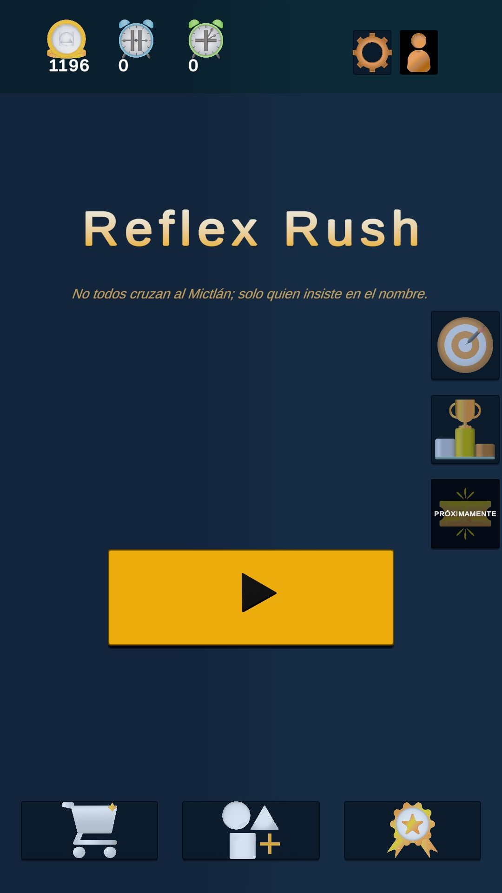
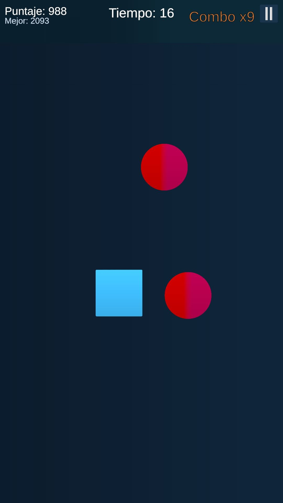
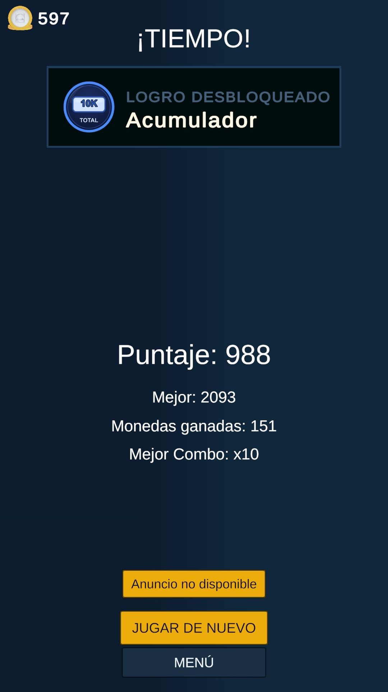
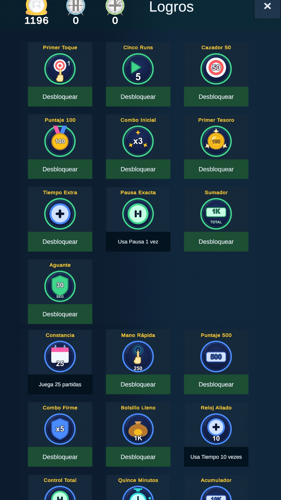
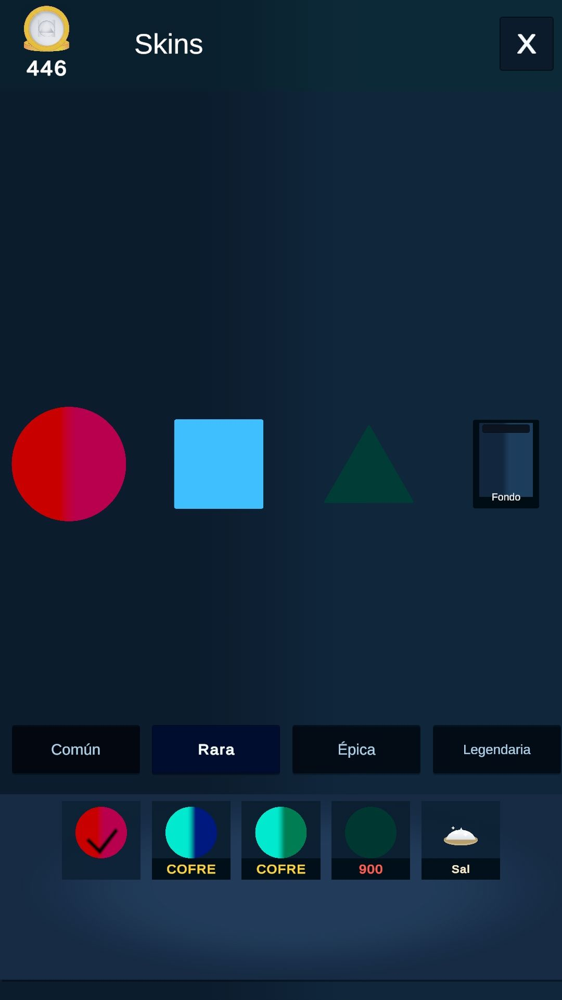
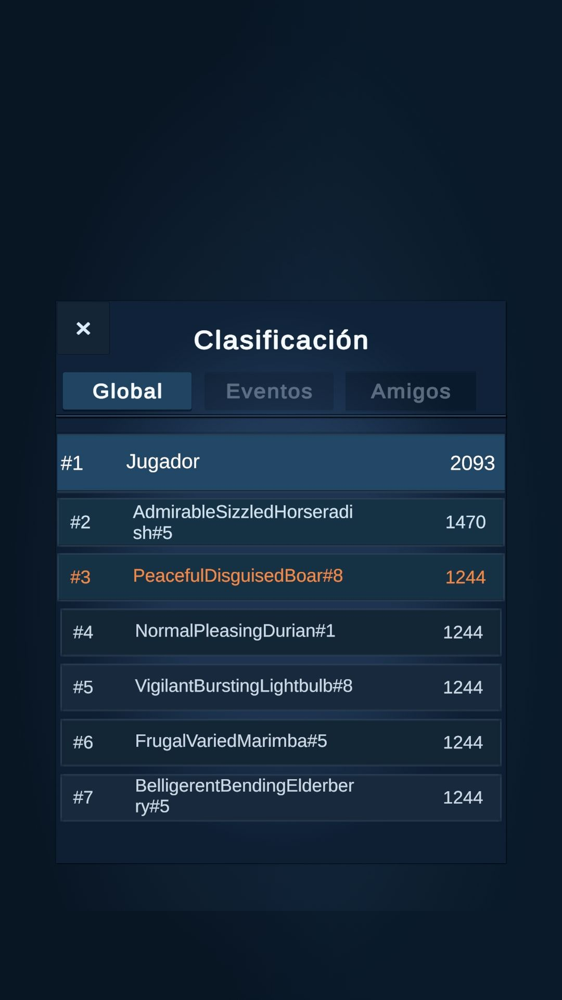

02
Proyectos
Plataforma de bots de membresías VIP
Multi-cliente · Telegram · en producción
En producción
Plataforma que automatiza por completo la venta de membresías de pago en Telegram: enlaces de acceso de un solo uso, alta y expulsión automática al vencer los días pagados, y recordatorios de renovación. Arquitectura multi-cliente (aislada por schema en PostgreSQL) con panel de administración y métricas, validación de comprobantes por OCR, verificación de pagos contra el CEP oficial (Banxico) y protección de contenido con marca de agua por comprador. Datos personales cifrados (AES-256-GCM).
TypeScriptNode.jsPostgreSQLDockerCifrado AES-256OCRDigitalOcean
🔎
Demo interactivo en vivo (control de acceso por roles / RBAC): recorre los tres niveles de privilegio —
Creador · Cliente · Administrador — y observa qué puede ver y hacer cada uno, en
t.me/StoneGuardian_bot.
Corre bajo demanda: si quieres probarlo, escríbeme antes (Telegram @defalt006) y lo enciendo en el momento.
A Que No Sabes
Bot de trivia para Telegram · servidor propio 24/7
En producción
Juego de trivia en español con más de 1,500 preguntas, corriendo 24/7 en un servidor propio (Raspberry Pi con systemd, arranque automático y reinicio ante fallos). Su núcleo es un sistema de dificultad adaptativa: un muestreo ponderado ajusta en silencio el nivel de cada jugador según sus aciertos, para mantenerlo siempre en zona de reto sin frustrarlo. Monetizado con Telegram Stars (pistas, vidas, categorías y regalos entre usuarios), e incluye modo multijugador en grupos en tiempo real, supervivencia, reto diario, tablas de clasificación, eventos administrables por archivo y un sistema de invitaciones con recompensas por hitos. Del lado de operación: panel de administración con métricas de negocio (ingresos, jugadores activos, qué se vende más) y un vigilante que avisa por Telegram cuando la RAM o el disco del servidor se acercan al límite.
Seguridad: economía servidor-autoritativa — ninguna recompensa puede forjarse desde el cliente y la respuesta correcta nunca viaja hasta que se contesta. Consultas parametrizadas, escapado de entradas, límite de peticiones por usuario, guarda anti-automatización y validación de toda acción recibida. El servidor está endurecido con cortafuegos, acceso solo por llave SSH, fail2ban y respaldos diarios.
Pythonpython-telegram-botSQLiteTelegram StarsRaspberry PisystemdEndurecimiento Linux
🎮
Pruébalo ahora mismo: está en línea y cualquiera puede jugarlo en
t.me/AQueNoSabes_bot.
No requiere instalación ni permisos: abre el enlace y presiona Iniciar.
Bot de pedidos por WhatsApp
Bot + panel web para restaurante
Listo para producción
Integración con la API oficial de WhatsApp (WhatsApp Cloud API) con dos identidades: un asistente de pedidos para clientes y un canal interno de operaciones. Toma de pedidos completa (sucursal, menú, producto personalizado, carrito), pagos con comprobantes, y una capa de seguridad reforzada: OTP, cifrado, backups cifrados, bitácora de auditoría y protección CSRF.
Node.jsExpressPostgreSQLWhatsApp Cloud APISeguridad (OTP/CSRF)
Botería
Plataforma SaaS para armar y rentar bots
Prototipo
Armador web (y Mini App de Telegram) donde el cliente configura su bot eligiendo funciones y ve la renta mensual actualizarse en vivo, con motor de precios y plantillas por rubro (creador, gimnasio, curso, club). Incluye un visualizador interactivo del bot resultante (vista de cliente y de administrador) y un generador de códigos QR propio, sin librerías externas.
TypeScriptHTML/CSS/JSTelegram Mini AppMotor de precios
Reflex Rush
Videojuego móvil para Android · Mictlan Studio
Prueba cerrada · Google Play
Juego arcade de reflejos desarrollado de principio a fin como único desarrollador (~28,000 líneas): jugabilidad, interfaz, efectos visuales propios y optimización para móvil. Cuenta con backend en la nube (cuentas, guardado y rankings) y monetización con compras dentro de la app y anuncios.
Unity 6C#Backend en la nubeMonetizaciónGoogle Play






Notas Inventario
App Android para gestión de negocio
En uso real
Aplicación móvil que gestiona cuentas de clientes, descuenta el inventario en tiempo real y calcula la rentabilidad por producto y por promoción. Integra escáner de código de barras con la cámara y maneja el dinero con precisión total. Diseñada para un negocio pequeño y funcionando hoy.
JavaAndroid nativoCameraXGoogle ML Kit